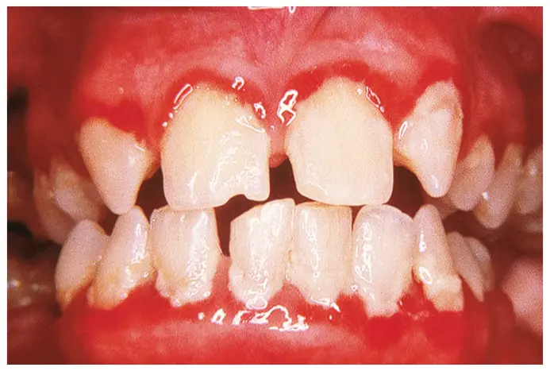

نسخه استخراجشده؛ ترجمه یا تأیید علمی انجام نشده است. وضعیت: captured
خانم ۳۰ سالهای در هفتهی ۳۴ بارداری برای ترمیم روی یونیت خوابیده است. ده دقیقه بعد رنگش پریده، عرق کرده و میگوید نفسش تنگ است. فشارش افتاده و نبضش کند شده. چه شده است؟
این سندرم هیپوتانسیون خوابیده به پشت (supine hypotensive syndrome) است. در خوابیدن به پشت، رحم بزرگ روی ورید اجوف تحتانی فشار میآورد، بازگشت خون به قلب کم میشود و فشار و برونده قلب میافتد. بیشتر در اواخر بارداری رخ میدهد.
چاره: بیمار را به پهلوی چپ بچرخان تا رحم از روی ورید کنار برود؛ فشار معمولاً بهسرعت برمیگردد.
در جلسهی اول سن بارداری، مراقبتهای پزشکی، سرانجام بارداریهای قبلی و بیماریهای همراه مثل فشار خون بالا یا دیابت را بپرس. در هر جلسه دستکم فشار خون و نبض را بسنج. فشار ۱۴۰/۹۰ یا بیشتر، یا بالا رفتن فشار سیستولیک ۳۰ mmHg یا دیاستولیک ۱۵ mmHg نسبت به پیش از بارداری، ممکن است نشانهی پرهاکلامپسی باشد و ارجاع به پزشک میخواهد.
پرهاکلامپسی معمولاً پس از هفتهی ۲۰ شروع میشود: فشار بالا، پروتئینوری، ادم و تاری دید. اکلامپسی تشنج یا کما میدهد؛ سردرد شدید، درد بالای راست شکم و تغییر دید یا هوشیاری زنگ خطر آناند.
بازسازی گسترده، روکش و بریج و جراحی بزرگ را به پس از زایمان بسپار. ولی عفونت دندانی را عقب نینداز: تب و سپسیس میتوانند سقط را جلو بیندازند.

نکتهی طلایی: بارداری بیماری پریودنتال نمیسازد، ولی بیماری موجود را بدتر میکند. دهانشویهی کلرهگزیدین ۰٫۱۲٪ در بارداری بیخطر است.